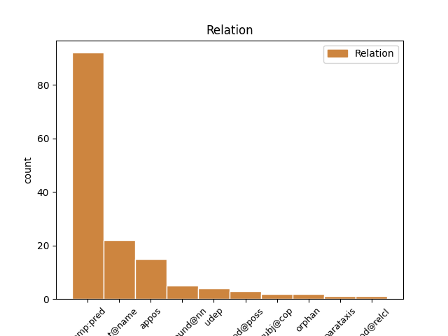
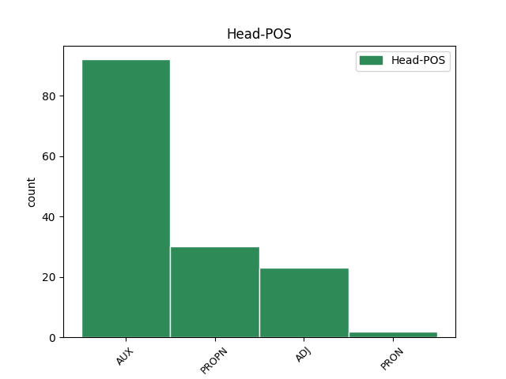
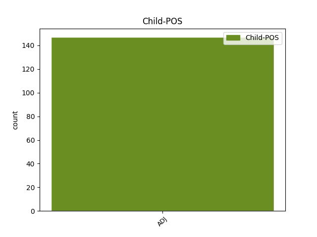

Distribution of features within this leaf



Agreement Rules sorted by frequency.
- When the dependent token is the predicative complements(comp:pred) of the head token, and the head token is AUX and the dependent token is ADJ.
1 Wikimedia-säätiön _ _ _ _ 0 _ _ _
2 johtokunta _ _ _ _ 0 _ _ _
3 ei _ _ _ _ 0 _ _ _
4 omien _ _ _ _ 0 _ _ _
5 sanojensa _ _ _ _ 0 _ _ _
6 mukaan _ _ _ _ 0 _ _ _
7 ollut olla AUX V Case=Nom|Degree=Pos|Number=Sing|PartForm=Past|VerbForm=Part|Voice=Act 0 _ _ _
8 tietoinen tietoinen ADJ A Case=Nom|Degree=Pos|Derivation=Inen|Number=Sing 7 comp:pred _ _
9 Doranin _ _ _ _ 0 _ _ _
10 menneisyydestä _ _ _ _ 0 _ _ _
11 tätä _ _ _ _ 0 _ _ _
12 ennen _ _ _ _ 0 _ _ _
13 . _ _ _ _ 0 _ _ _
1 McCain _ _ _ _ 0 _ _ _
2 puolestaan _ _ _ _ 0 _ _ _
3 sanoi _ _ _ _ 0 _ _ _
4 Obaman _ _ _ _ 0 _ _ _
5 talousmielipiteitä _ _ _ _ 0 _ _ _
6 senaatissa _ _ _ _ 0 _ _ _
7 vasemmistolaisiksi vasemmistolainen ADJ A Case=Tra|Degree=Pos|Derivation=Lainen|Number=Plur 0 _ _ _
8 , _ _ _ _ 0 _ _ _
9 äärimmäisen _ _ _ _ 0 _ _ _
10 liberalistisiksi liberalistinen ADJ A Case=Tra|Degree=Pos|Derivation=Inen|Number=Plur 7 appos _ SpaceAfter=No
11 . _ _ _ _ 0 _ _ _
1 Sanojen _ _ _ _ 0 _ _ _
2 tekijäksi _ _ _ _ 0 _ _ _
3 paljastui _ _ _ _ 0 _ _ _
4 52-vuotias _ _ _ _ 0 _ _ _
5 työtön työtön ADJ A Case=Nom|Degree=Pos|Derivation=Ton|Number=Sing 6 compound@nn _ _
6 Paulino Paulino PROPN N Case=Nom|Number=Sing 0 _ _ _
7 Cubero _ _ _ _ 0 _ _ _
8 Kastilia- _ _ _ _ 0 _ _ _
9 La _ _ _ _ 0 _ _ _
10 Manchasta _ _ _ _ 0 _ _ _
11 . _ _ _ _ 0 _ _ _
Disagree Examples:
1 Jos _ _ _ _ 0 _ _ _
2 lapsi _ _ _ _ 0 _ _ _
3 kokee _ _ _ _ 0 _ _ _
4 olevansa olla AUX V Case=Gen|Degree=Pos|Number=Sing|PartForm=Pres|Person[psor]=3|VerbForm=Part|Voice=Act 0 _ _ _
5 huonompi huono ADJ A Case=Nom|Degree=Cmp|Number=Sing 4 comp:pred _ SpaceAfter=No
6 , _ _ _ _ 0 _ _ _
7 heikompi _ _ _ _ 0 _ _ _
8 , _ _ _ _ 0 _ _ _
9 osaamaton _ _ _ _ 0 _ _ _
10 , _ _ _ _ 0 _ _ _
11 vähemmän _ _ _ _ 0 _ _ _
12 kiinnostava _ _ _ _ 0 _ _ _
13 kuin _ _ _ _ 0 _ _ _
14 vanhemmat _ _ _ _ 0 _ _ _
15 , _ _ _ _ 0 _ _ _
16 jne _ _ _ _ 0 _ _ _
17 , _ _ _ _ 0 _ _ _
18 hän _ _ _ _ 0 _ _ _
19 alkaa _ _ _ _ 0 _ _ _
20 väheksyä _ _ _ _ 0 _ _ _
21 itseään _ _ _ _ 0 _ _ _
22 ja _ _ _ _ 0 _ _ _
23 hävetä _ _ _ _ 0 _ _ _
24 sitä _ _ _ _ 0 _ _ _
25 , _ _ _ _ 0 _ _ _
26 että _ _ _ _ 0 _ _ _
27 ei _ _ _ _ 0 _ _ _
28 ole _ _ _ _ 0 _ _ _
29 yhtä _ _ _ _ 0 _ _ _
30 pätevä _ _ _ _ 0 _ _ _
31 kuin _ _ _ _ 0 _ _ _
32 aikuinen _ _ _ _ 0 _ _ _
33 . _ _ _ _ 0 _ _ _
1 Olin _ _ _ _ 0 _ _ _
2 itse _ _ _ _ 0 _ _ _
3 ilmeisen _ _ _ _ 0 _ _ _
4 alitajuisesti _ _ _ _ 0 _ _ _
5 pessimistisenä _ _ _ _ 0 _ _ _
6 liikkeellä _ _ _ _ 0 _ _ _
7 , _ _ _ _ 0 _ _ _
8 koska _ _ _ _ 0 _ _ _
9 tulin _ _ _ _ 0 _ _ _
10 autolla _ _ _ _ 0 _ _ _
11 eikä _ _ _ _ 0 _ _ _
12 skumppaa _ _ _ _ 0 _ _ _
13 ollut olla AUX V Case=Nom|Degree=Pos|Number=Sing|PartForm=Past|VerbForm=Part|Voice=Act 0 _ _ _
14 kylmässä kylmä ADJ A Case=Ine|Degree=Pos|Number=Sing 13 comp:pred _ SpaceAfter=No
15 . _ _ _ _ 0 _ _ _
1 Hyvää _ _ _ _ 0 _ _ _
2 oli _ _ _ _ 0 _ _ _
3 , _ _ _ _ 0 _ _ _
4 rahka _ _ _ _ 0 _ _ _
5 ei _ _ _ _ 0 _ _ _
6 ollut olla AUX V Case=Nom|Degree=Pos|Number=Sing|PartForm=Past|VerbForm=Part|Voice=Act 0 _ _ _
7 onneksi _ _ _ _ 0 _ _ _
8 ollenkaan _ _ _ _ 0 _ _ _
9 niin _ _ _ _ 0 _ _ _
10 makeaa makea ADJ A Case=Par|Degree=Pos|Number=Sing 6 comp:pred _ _
11 mitä _ _ _ _ 0 _ _ _
12 kuvittelin _ _ _ _ 0 _ _ _
13 ... _ _ _ _ 0 _ _ _
14 . _ _ _ _ 0 _ _ _
1 mansikatkin _ _ _ _ 0 _ _ _
2 maistuivat _ _ _ _ 0 _ _ _
3 mansikoille _ _ _ _ 0 _ _ _
4 , _ _ _ _ 0 _ _ _
5 vaikka _ _ _ _ 0 _ _ _
6 eivät _ _ _ _ 0 _ _ _
7 kotimaisien kotimainen ADJ A Case=Gen|Degree=Pos|Derivation=Inen|Number=Plur 8 mod@poss _ _
8 veroisia veroinen ADJ A Case=Par|Degree=Pos|Derivation=Inen|Number=Plur 0 _ _ _
9 olekkaan _ _ _ _ 0 _ _ _
10 . _ _ _ _ 0 _ _ _
1 Hauduttelin _ _ _ _ 0 _ _ _
2 kyljyksiä _ _ _ _ 0 _ _ _
3 pannulla _ _ _ _ 0 _ _ _
4 kannen _ _ _ _ 0 _ _ _
5 alla _ _ _ _ 0 _ _ _
6 vähässä _ _ _ _ 0 _ _ _
7 liemessä _ _ _ _ 0 _ _ _
8 , _ _ _ _ 0 _ _ _
9 aina _ _ _ _ 0 _ _ _
10 välillä _ _ _ _ 0 _ _ _
11 valelin _ _ _ _ 0 _ _ _
12 lihoja _ _ _ _ 0 _ _ _
13 pannulla _ _ _ _ 0 _ _ _
14 olevalla _ _ _ _ 0 _ _ _
15 soosilla _ _ _ _ 0 _ _ _
16 , _ _ _ _ 0 _ _ _
17 koska _ _ _ _ 0 _ _ _
18 sitä _ _ _ _ 0 _ _ _
19 ei _ _ _ _ 0 _ _ _
20 ollut olla AUX V Case=Nom|Degree=Pos|Number=Sing|PartForm=Past|VerbForm=Part|Voice=Act 0 _ _ _
21 niin _ _ _ _ 0 _ _ _
22 paljoa paljo ADJ A Case=Par|Degree=Pos|Number=Sing 20 comp:pred _ SpaceAfter=No
23 , _ _ _ _ 0 _ _ _
24 että _ _ _ _ 0 _ _ _
25 kyljykset _ _ _ _ 0 _ _ _
26 olisivat _ _ _ _ 0 _ _ _
27 olleet _ _ _ _ 0 _ _ _
28 sen _ _ _ _ 0 _ _ _
29 peitossa _ _ _ _ 0 _ _ _
30 . _ _ _ _ 0 _ _ _